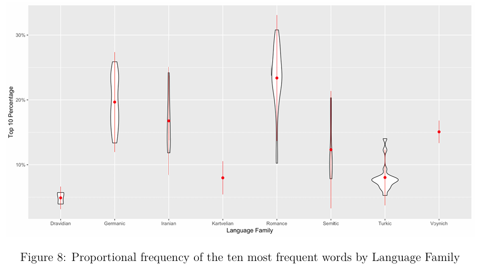
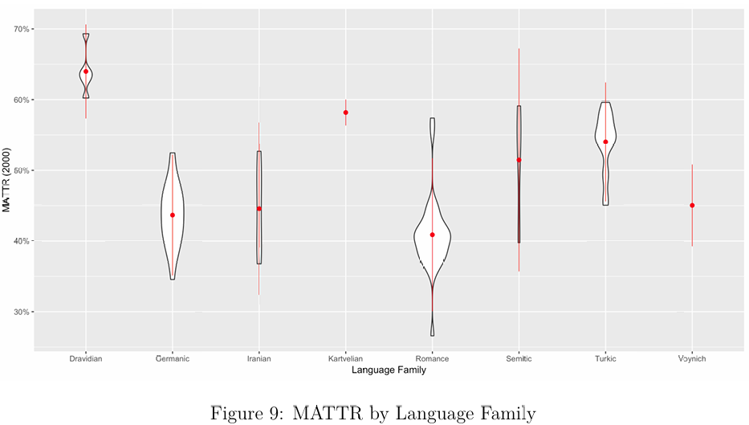

Total tokens: 33131
Unique types: 6876Decipherment
Day 22: Etruscan & the Voynich Manuscript
Dr. Andrew M. Byrd
Overview of End of Term
The End is Nigh
Undeciphered scripts/languages
- Etruscan / Voynich
- Indus Valley / Rongorongo
- Linear A / Phaistos Disc / Trojan
- Zapotec / Isthmian
- the Vinča Script / Proto-Indo-European
- Week-long Activity: Decipher the Script
Unsuccessful Decipherments
Types of Decipherment
- Don’t Know the Script, Know the Language
- Cuneiform, Egyptian Hieroglyphs, Linear B
- Best case scenario
Types of Decipherment
- Know the Script, Don’t Know the Language
- Etruscan, Linear A (ish)
- Less good scenario
Types of Decipherment
- Don’t Know the Script or the Language
- Indus Valley, Rongorongo, Vinča Script, Phaistos Disc
- Worst case scenario
- There are no successful cases of decipherment that fall into this camp
Etruscan
Review
Who were the Etruscans?

Liber Linteus Zagrabiensis
- Longest surviving text in Etruscan
- dated 3rd c. BCE
- “Linen Book of Zagreb”

Liber Linteus Zagrabiensis
- In 1848, Mihajlo Barić (1791–1859) took a tour of Egypt
- In Alexandria, bought a sarcophagus containing a female mummy

He bought a mummy?!?!?
Liber Linteus Zagrabiensis
- The mummy was wrapped in linen cloth, inscribed in an unknown language

What is Etruscan like?
Let’s find out by examining perhaps the most important Etruscan text, the Pyrgi Tablets
- 3 golden plates
- Bilingual Phoenician-Etruscan text
Pyrgi Tablets

Pyrgi Tablets

Activity
- What is the linear orientation of the Phoenician and Etruscan texts?
- Do you recognize any letters?
Activity
To [our] Lady, to ’Astart.
This holy place was made and donated by Thefarie(i) Velianas, who reigns over KYSRYJ, in the month of the Sacrifice to the Sun, as a donation to the House [= temple];
and he made [this] effigy, so as to satisfy the wish of ’Astart, [during] the third year of his kingdom, [in] the month KRR, in the day the divinity is buried.
And years [=long life] to the simulacrum of the divinity in its House [= temple], [may its] years [be] as many as these (very) stars.
Activity
A.1 ita · tmia
A.2 icac · heramaśva
A.3 vatieχe · unilastres
A.4 θemiasa · meχ · θuta
A.5 θefariei · velianas · sal · cluvenias
A.6 turuce · munistas · θuvas tameresca
A.7 ilacve tulerase
A.8 nac · ci · avil
A.9 χurvar · teśiameitale
A.10 ilacve · alśase
A.11 nac · atranes · zilacal · seleitala
A.12 acnaśvers · itanim · heramve
A.13 avil · eniaca · pulumχva
Activity
- Spend some time with your neighbors examing the Etruscan text.
- Can you identify any words shared with Phoenician?
- Does this language appear to be a prefixing or suffixing language?
- Any guesses on the meanings of words? (Hint: focus on the short ones.)
Pyrgi Tablets, Possible Translation
https://dizbi.hazu.hr/d17b118n/main/g/9b/amu/g9bamu9l3d12.pdf
Pyrgi Tablets, Possible Translation
A.1 ita · tmia this holy place
A.2 icac · heramaśva and this simulacrum (?these two simulacra)
A.3 vatieχe · unilastres was/were solemnly promised to Uni (?the Junones)
A.4 θemiasa · meχ · θuta having built a large (fencing) wall
A.5 θefariei · velianas · sal · cluvenias Thefarie Velianas priest-king (rex sacrorum) of Cluvenia
A.6 turuce · munistas · θuvas tameresca donated this protected place (?cell) for the sepulchral ark
Pyrgi Tablets, Possible Translation
A.7 ilacve tulerase in the month of Tuler
A.8 nac · ci · avil three years after
A.9 χurvar · teśiameitale the powers had been bestowed upon him
A.10 ilacve · alśase in the month of Alśa
A.11 nac · atranes · zilacal · seleitala after the burial of the ?illuminated ruler (divinity)
A.12 acnaśvers · itanim · heramve the simulacrum for the temple carved (or: portrayed)
A.13 avil · eniaca · pulumχva [may its] years [be] as many as this (set of) stars
Translated Inscriptions

MINI USILE MULUVANICE
Usil donated me (an amphora)
Translated Inscriptions

FELSNAS LA(RIS) LETHES SVALCE AVIL CVI MURCE CAPUE TLECHE HANIPALUSCLE
Laris Felsnas, (son) of Lethe, lived 106 years, lived in Capua, fought (?) for (or against) Hannibal.
The Voynich Manuscript
From Etruria to ???
- In the previous instance of (sorta) decipherment, we knew exactly who, when, and where the language is from
From Etruria to ???
- But in the next one, we don’t know who, when, or where
- And we don’t even know if it’s a real writing system!
The Voynich Manuscript

What is the Voynich Manuscript?
- A 15th-century illustrated codex written in an unknown script and language
- Radiocarbon dating: c. 1404–1438
- Likely produced in Central Europe (possibly northern Italy)
- Author and original purpose: unknown
What is the Voynich Manuscript?
- Likely owned by Rudolph II, Holy Roman Emperor (1576-1612)
- obsessed with alchemy, astrology, esoteric knowledge

What is the Voynich Manuscript?
- Sent by Johannes Marcus Marci to Athanasius Kircher (remember him?) in 1665/66 with an accompanying letter

What is the Voynich Manuscript?
- His letter claims:
- Rudolf II owned it
- Might be the work of philosopher and scientist Roger Bacon

What is the Voynich Manuscript?
- Stored in the Collegio Romano (Rome)
- Remained largely forgotten for ~200 years
- No major scholarly attention

What is the Voynich Manuscript?
- Rediscovered and purchased in 1912 by Polish book dealer Wilfrid Voynich, who introduced it to modern scholarship

What is the Voynich Manuscript?
- Passed on to Voynich’s widow, Ethel Voynich, who sold to rare book dealer, Hans P. Krause, who eventually donated it to Yale.
- Catalog number: MS 408
- Fully digitized and publicly accessible

Why is it famous?
- One of the most famous undeciphered texts in the world
- Has resisted:
- Cryptanalysis
- Linguistic decoding
- Historical identification
Why is it famous?
- No consensus on:
- Language
- Script type
- Meaning
Structure of the Manuscript
The manuscript is typically divided into five sections:
- Botanical – drawings of unknown plants
- Astrological – zodiac and diagrams
- Balneological – figures in liquid (often interpreted as baths)
- Pharmaceutical – jars, roots, and plant parts
- Text-only (“recipes”) – paragraphs marked with stars
The Voynich Manuscript

The Voynich Manuscript

The Script (“Voynichese”)

The Script (“Voynichese”)
- Contains ~20–25 common symbols, plus rarer ones
- Some resemble:
- Latin letters (a, o, i)
- Numbers
- Unique “gallows” characters
The Script (“Voynichese”)

- Commonly analyzed using EVA (Extensible Voynich Alphabet)
Wait, are these the actual phonetic values?
Is it a Real Language?
Two main positions:
1. Natural Language (encoded)
Would need to show:
Word structure
Repetition patterns
Statistical regularities
Is it a Real Language?
Two main positions:
2. Gibberish / Hoax
If gibberish or a hoax the text the structure of the text should not resemble natural language.
If so, perhaps artificially generated?
Why would anyone create an entire book of gibberish?
Is it a Real Language?
Current linguistic consensus leans toward:
- Encoded natural language, not random text
What sort of clues would researchers be looking for to indicate this?
Activity: the Voynich Manuscript
daiin ol chedy qokedy qokeey dal
chol chol daiin chey qokain ol
chedy qokeedy shedy qokedy daiin
ol daiin chol chedy qokedy qokeey
qokeedy chedy ol daiin aiin chol
shedy qokain qokeedy chey daiin
daiin chedy ol chol qokedy chey
qokain chedy shedy ol daiin
ol chedy qokedy qokeey daiin chol
shedy qokeedy chey ol aiin daiin
qokain chedy ol daiin chol chey
daiin qokedy chedy shedy ol
Activity: the Voynich Manuscript
- Analyze this section of the Voynich manuscript.
- What features do you notice? Are there any notable repetitions?
- Do any prefixes or suffixes jump out at you?
- Does this feel like a real language, or gibberish?
Crunching Some Numbers
Crunching Some Numbers
- Full manuscript (transcribed) found at Chirila’s Github:
- Analyzing this file locally:
Crunching Some Numbers
- Analyzing the distribution of the top 500 words
- What does this graph tell you?

Zipf’s Distribution
- Shows that the Voynich manuscript is not random!
- Random strings do not typically produce this kind of orderly frequency distribution.
- This is the type of distribution one expects in natural language.
Zipf’s Distribution
- At the same time, a Zipfian distribution does not by itself prove that the manuscript encodes language.
- Other structured systems can also generate similar curves (income distribution, website hits, city populations, etc.)
- What this result demonstrates is that the Voynich text is highly organized, but it does not yet tell us what kind of system lies behind that organization.
Crunching Some Numbers
- Analyzing three-letter sequences (trigrams) at word’s edge
Top prefixes:
[('qok', 2936), ('che', 2443), ('she', 1637), ('cho', 1458), ('dai', 1229), ('qot', 1074), ('oke', 761), ('oka', 709), ('ota', 631), ('sho', 602)]
Top suffixes:
[('iin', 3878), ('edy', 3843), ('eey', 1669), ('ain', 1473), ('hey', 1437), ('hol', 944), ('ody', 904), ('eol', 767), ('chy', 704), ('hor', 665)]
------------------------------------------------------------------
Prefix diversity: 637
Suffix diversity: 547Prefixes and Suffixes
The most common three-letter prefixes and suffixes reveal strong regularities in word formation.
- High-frequency prefixes:
qok-,che-,she- - High-frequency suffixes:
-iin,-edy
- High-frequency prefixes:
Prefixes and Suffixes
- Suggests that Voynich words are not arbitrary strings of characters.
- Instead, they appear to be built from recurring subword units, much like prefixes and suffixes in known languages.
- In particular, the concentration of recurring endings suggests that much of the variation in Voynich words may be carried at the end of the word.
Crunching Some Numbers
There are quite a few “families” of words, beginning with similar types of sequences
Many words share the same first three letters but differ in their endings.
yka ['ykald', 'ykan', 'yka', 'ykalokain', 'ykarshy', 'ykaiil', 'ykam', 'ykaipy', 'ykaky', 'ykanam']
sho ['sholar', 'shotol', 'shoteo', 'shoyfar', 'shodary', 'shoteeody', 'shoaldy', 'shotchey', 'sholoiin', 'shot']
cth ['cther', 'cthos', 'ctholo', 'cthy', 'cthedy', 'cthd', 'ctheodal', 'cthodaiis', 'ctheos', 'ctheol']
kor ['kor', 'korare', 'korol', 'kory', 'korols', 'korary', 'korain', 'koroiin', 'koraiin', 'korchy']
sor ['sorcheey', 'soral', 'sory', 'sorain', 'soraiin', 'sor', 'soraloaly', 'sorol', 'sorary', 'sorshy']
ckh ['ckhal', 'ckhhy', 'ckhos', 'ckheod', 'ckhody', 'ckhyds', 'ckheeey', 'ckhs', 'ckheckhy', 'ckhhey']
kai ['kaiiidal', 'kaiis', 'kais', 'kaiiin', 'kaiishdy', 'kaiech', 'kair', 'kaishd', 'kairam', 'kaiim']
cht ['chtain', 'chtoiin', 'chtoithy', 'chtol', 'chtchey', 'chtedytar', 'chtodaiin', 'chteeor', 'chteey', 'chtchol']
sha ['shaikhy', 'shaikhhy', 'shaiin', 'shan', 'shaiiin', 'sha', 'shalom', 'shalkaiin', 'shapchedyfeey', 'sham']
she ['shekydy', 'shekedy', 'sheckhdy', 'sheekey', 'sheodal', 'sheyky', 'sher', 'sheoees', 'sheeoly', 'shekaiiin']
dar ['dary', 'darar', 'darory', 'darala', 'darodsf', 'dardam', 'darchor', 'darolm', 'darchedy', 'darody']
ote ['oteeedchey', 'oteorom', 'otedaiin', 'otear', 'otechy', 'oteedar', 'otedyo', 'oteeo', 'oteeoaly', 'oteos']
rol ['rolchey', 'rol', 'rolchy', 'rolkeey', 'rolkeedy', 'rolshey', 'roly', 'rolsheedy', 'rolchedy', 'roloty']
dai ['daiiy', 'daiity', 'dairiy', 'daim', 'daiin', 'dainl', 'dairom', 'daing', 'dairchey', 'daiil']
ota ['otaim', 'otaiin', 'otary', 'otalshedy', 'otaily', 'otaiir', 'otalar', 'otaram', 'ota', 'otaiiin']
oka ['okald', 'okaiir', 'okaly', 'okalaiin', 'okaiikhal', 'okail', 'okalched', 'okalchdy', 'okalchedy', 'okalcheg']
che ['chetas', 'cheoal', 'cheekey', 'cheekeo', 'cheocphy', 'cheetam', 'cheykey', 'chekam', 'chetey', 'cheoar']
cph ['cphoal', 'cphom', 'cpheesy', 'cpheckhy', 'cpharom', 'cpheol', 'cphedy', 'cphochy', 'cphoy', 'cpholdy']
cfh ['cfheey', 'cfhdorol', 'cfhdy', 'cfhodoral', 'cfham', 'cfheol', 'cfhekchdy', 'cfhar', 'cfhoy', 'cfhaiin']
oda ['odal', 'odaiiily', 'odaldy', 'odaiim', 'odair', 'odaidy', 'odaiir', 'odaiiin', 'odalaly', 'odaiil']
ysh ['ysheockhy', 'ysheedal', 'yshealdy', 'yshear', 'ysheo', 'yshedy', 'yshos', 'ysheed', 'ysheod', 'ysheal']
okc ['okcho', 'okchy', 'okchoda', 'okcheefy', 'okchhy', 'okchop', 'okchedam', 'okchafdy', 'okchechy', 'okchochor']
otc ['otchs', 'otchody', 'otcheedaiin', 'otchald', 'otches', 'otcheeo', 'otcheypchedy', 'otchoky', 'otchar', 'otchsdy']
cho ['chocphol', 'chokeeey', 'chopchdy', 'cholp', 'chotshol', 'chockhdy', 'chopy', 'chokaly', 'chodykchy', 'chokshy']
yda ['ydarchom', 'ydair', 'ydals', 'ydar', 'ydaiin', 'ydairol', 'ydaral', 'ydas', 'ydal', 'ydain']
yta ['ytarar', 'ytain', 'ytasal', 'ytair', 'ytam', 'ytaiim', 'ytalchos', 'ytal', 'ytalar', 'ytaly']
oks ['okseey', 'okshed', 'okshody', 'okshes', 'okshdy', 'oksho', 'oksholshol', 'okshey', 'okshor', 'okshchedy']
ksh ['kshody', 'kshdain', 'kshd', 'kshdy', 'kshor', 'kshed', 'ksheey', 'ksheodl', 'kshaiin', 'kshoy']
kod ['kodshol', 'kodam', 'kodal', 'kodaiin', 'kody', 'kodeey', 'kodalchy', 'kod', 'koddy', 'kodl']
old ['oldam', 'oldar', 'oldy', 'oldaim', 'oldor', 'oldaiin', 'oldain', 'oldal', 'oldckhy', 'old']
oii ['oiiiny', 'oiir', 'oiiin', 'oiin', 'oiinol', 'oiinal', 'oiiiin']
chd ['chdoly', 'chdain', 'chdlcty', 'chdo', 'chdarol', 'chdalkair', 'chdor', 'chddy', 'chdam', 'chdalal']
shc ['shckhefy', 'shcheaiin', 'shckhhy', 'shcfhor', 'shcphoor', 'shcty', 'shckhy', 'shckhey', 'shckhhd', 'shckhchy']
kol ['koldal', 'koldaky', 'koltoldy', 'kolches', 'kolor', 'kolky', 'kolshes', 'koly', 'kolsho', 'kolshd']
cha ['chaloly', 'chas', 'charain', 'chalkeedy', 'chalkar', 'chapchy', 'chariin', 'chalr', 'chaiin', 'char']
kch ['kchody', 'kcheey', 'kcheoly', 'kcheodar', 'kcheedy', 'kcheat', 'kchor', 'kchochaiin', 'kchorl', 'kchdy']
dor ['doral', 'dorkcheky', 'dorody', 'dorg', 'dorsheoy', 'dorean', 'dorl', 'doror', 'dorar', 'dory']
ych ['ychain', 'ychol', 'ycheochy', 'ycheeor', 'ychcthod', 'ychoopy', 'ycheom', 'ychdy', 'ychom', 'ychedar']
tch ['tchcthy', 'tchotshey', 'tchodain', 'tchedair', 'tchoar', 'tchaiin', 'tchdys', 'tchalody', 'tchal', 'tchom']
psh ['pshody', 'pshedy', 'psheedy', 'pshdal', 'psheodalo', 'psheoldy', 'psheoas', 'pshdy', 'pshdar', 'psheody']
dyd ['dydy', 'dydain', 'dydaim', 'dydydy', 'dydyd', 'dydchy']
yto ['ytoda', 'ytorory', 'ytoryd', 'ytol', 'ytom', 'ytoiiin', 'ytoiin', 'ytolkal', 'ytodaly', 'ytos']
das ['dasam', 'dasady', 'dasy', 'dasar', 'das', 'dasain', 'dasaiin']
dch ['dcheodain', 'dchedain', 'dcheod', 'dched', 'dcheocy', 'dcheaiin', 'dchefoey', 'dchody', 'dcheodl', 'dcheody']
rch ['rcheeo', 'rcheodal', 'rches', 'rcheetey', 'rchseesy', 'rcheold', 'rchy', 'rchey', 'rcheo', 'rchody']
tsh ['tshaiin', 'tsheodar', 'tshedal', 'tshor', 'tshoky', 'tshodody', 'tshed', 'tshodair', 'tsholol', 'tshedain']
chy ['chypchey', 'chyqo', 'chyd', 'chykar', 'chytchy', 'chyteey', 'chypchy', 'chydy', 'chykeedy', 'chypaldy']
doi ['doiin', 'doiir', 'doiiin', 'doiros', 'doiiram', 'doikhy', 'doin']
oko ['okom', 'okorair', 'okolaiin', 'okodar', 'okolchy', 'okolchey', 'okols', 'okorory', 'okor', 'okoaiin']
dal ['daly', 'dalocthhy', 'dala', 'daldaiin', 'dalody', 'dalkal', 'dalteoshy', 'dalaiin', 'dalkar', 'dalols']
eeo ['eeos', 'eeor', 'eeodaiin', 'eeo', 'eeol', 'eeoseeos']
kee ['keesy', 'keeeol', 'keeedal', 'keem', 'keeedy', 'keeodol', 'keechdy', 'keeod', 'keedas', 'keeol']
olt ['oltcheey', 'oltchedy', 'oltaiin', 'oltchy', 'olteedy', 'oltoiin', 'oltey', 'olteey', 'oltam', 'oltedy']
yte ['yteeo', 'yteeos', 'ytedy', 'ytees', 'yteochy', 'yteodam', 'yteeed', 'yteos', 'yteair', 'yteeeor']
och ['ochedal', 'ochepchody', 'ochedar', 'ocheoithey', 'ochoaiin', 'ocheain', 'ocholdy', 'ochoiky', 'ochos', 'ochey']
shy ['shydal', 'shykeody', 'shytchy', 'shy', 'shypchedy', 'shysho', 'shyshol', 'shykaiin']
dol ['dolchl', 'dolds', 'dolshedy', 'doledy', 'dolor', 'dolar', 'doleeey', 'dolchey', 'doldaiin', 'dolshed']
soc ['sockhody', 'sockhey', 'socthody', 'socthey', 'socthh', 'sochey']
tod ['tody', 'todor', 'todydy', 'todal', 'todaly', 'todalain', 'todain', 'tod', 'todar', 'todasihx']
oto ['otory', 'otolom', 'otor', 'otochor', 'otoralchy', 'otoloaiin', 'otolfcho', 'otokal', 'otoloty', 'otodal']
lol ['lolkeol', 'lolkedy', 'loly', 'lolchor', 'loldy', 'lolkair', 'lol', 'lolol', 'lolor', 'lolain']
yko ['ykor', 'ykodar', 'ykofar', 'ykoear', 'ykory', 'ykolor', 'ykolody', 'ykoaiin', 'ykody', 'ykoiin']
lch ['lcheeor', 'lcheod', 'lchealaim', 'lchedo', 'lchsl', 'lchpchdy', 'lcheed', 'lchealaiin', 'lcheol', 'lchl']
kec ['kechodshey', 'kechy', 'kechedy', 'kechey', 'kechdy', 'kecheokeo']
sch ['sches', 'schea', 'scheom', 'schocthhy', 'schos', 'schar', 'schcthy', 'schaiin', 'schold', 'schol']
pol ['polchechy', 'polkchy', 'polcheolkain', 'polshol', 'polyshy', 'poldaky', 'polchdy', 'polshor', 'polshdy', 'polsaisy']
ypc ['ypch', 'ypcholy', 'ypchey', 'ypchseds', 'ypchal', 'ypchocpheosaiin', 'ypchdar', 'ypchedy', 'ypchdaiin', 'ypchaiin']
chk ['chkear', 'chkeor', 'chkchy', 'chka', 'chkcheean', 'chkaidararal', 'chkeedy', 'chkol', 'chkdain', 'chkshy']
qot ['qotchody', 'qotar', 'qoteeoy', 'qoteeos', 'qotchar', 'qoty', 'qotalody', 'qotedal', 'qoteytyqoky', 'qotolcheo']
ytc ['ytchoky', 'ytcheeky', 'ytchar', 'ytcheodar', 'ytchos', 'ytchedy', 'ytchdy', 'ytchaly', 'ytcheey', 'ytcheear']
sai ['saiindy', 'saiidy', 'sairal', 'sair', 'saiichor', 'sairom', 'sairor', 'sairn', 'saiirol', 'saino']
yks ['yksh', 'yksho', 'yksheol', 'ykshy', 'yksheey', 'ykshol']
ols ['olsheey', 'olshly', 'olsaly', 'olsheeosol', 'olsheedy', 'olshty', 'ols', 'olsheor', 'olseeg', 'olshedy']
qok ['qokal', 'qokolkain', 'qokcheey', 'qokiir', 'qokychdy', 'qokod', 'qokeeor', 'qokom', 'qoked', 'qokchs']
keo ['keoky', 'keodky', 'keor', 'keoy', 'keo', 'keolor', 'keody', 'keocthy', 'keolchey', 'keos']
sal ['salar', 'saldam', 'salched', 'saldaiin', 'sal', 'salkeedy', 'salal', 'saldal', 'salchedy', 'saly']
yke ['ykeea', 'ykeodain', 'ykeedaiin', 'ykeeody', 'ykees', 'ykeeols', 'ykedckhy', 'ykeeol', 'ykeedy', 'ykeeshy']
chc ['chcthso', 'chckhaly', 'chchy', 'chcphar', 'chcphedy', 'chcheey', 'chckhod', 'chckhal', 'chcthedy', 'chcthod']
pch ['pcheeody', 'pcho', 'pcheoepchy', 'pcheoor', 'pchafdan', 'pchedaiin', 'pcheocphy', 'pcheolkal', 'pcheam', 'pcheokeey']
sht ['shtal', 'shtshy', 'shtchy', 'shtar', 'shtaiin', 'shteody', 'shtor', 'shtol', 'shtey', 'shty']
lsh ['lshes', 'lshechy', 'lsheedy', 'lsheol', 'lshee', 'lshety', 'lshd', 'lshed', 'lshdar', 'lsheody']
qop ['qopary', 'qopdy', 'qopdaiin', 'qopchedaiin', 'qopchody', 'qopcheeody', 'qopchedy', 'qopchyr', 'qopol', 'qopchedyd']
qoc ['qockhy', 'qochaiin', 'qocfhey', 'qockheor', 'qochedy', 'qochey', 'qockheol', 'qockho', 'qockhdy', 'qoctho']
qod ['qodaiin', 'qodchy', 'qodary', 'qodar', 'qodair', 'qodor', 'qoda', 'qodan', 'qodom', 'qodal']
sol ['soloiin', 'solcthy', 'solor', 'soldy', 'solain', 'solkchedy', 'sold', 'solchyd', 'sol', 'solshedy']
qos ['qoshy', 'qosheckhhy', 'qoseey', 'qoschodam', 'qoscheody', 'qoshedy', 'qosheo', 'qosaiin', 'qos', 'qosain']
oct ['octheody', 'octhd', 'octham', 'octy', 'octhey', 'octhy', 'octhain', 'octhdy', 'octheol', 'octhair']
oke ['okeeey', 'okeedal', 'okeearam', 'okeeoly', 'okechey', 'okeer', 'okeeaiin', 'okechod', 'okeeeol', 'okeedaiin']
olc ['olcheckhy', 'olchdaiin', 'olcthr', 'olchy', 'olcheor', 'olcheedar', 'olchoiin', 'olchad', 'olcphy', 'olcheety']
opo ['opolkeor', 'opod', 'oporar', 'opodaiin', 'oporody', 'opolsy', 'opomdy', 'oporaiin', 'opoloiin', 'opom']
soe ['soeom', 'soes', 'soeeedy', 'soefchocphy', 'soeeol', 'soeees']
opc ['opchdy', 'opcheeo', 'opcheeol', 'opcheeky', 'opchor', 'opchdain', 'opchedy', 'opchaldy', 'opcholor', 'opchdal']
qoe ['qoeekeedy', 'qoekaiin', 'qoekshg', 'qoepsheody', 'qoeeda', 'qoedeey', 'qoeeckhy', 'qoeeody', 'qoeol', 'qoekeeykeody']
aii ['aiioly', 'aiiry', 'aiiiky', 'aiiikhedy', 'aiiin', 'aiisod', 'aiip', 'aiin', 'aiisaim', 'aiir']
see ['seedy', 'seees', 'seear', 'seekey', 'seeey', 'seey']
ykc ['ykcheor', 'ykchol', 'ykchor', 'ykchedy', 'ykcheg', 'ykchdar', 'ykchn', 'ykcholy', 'ykchhdy', 'ykchokeo']
osh ['oshaiin', 'osh', 'oshctho', 'osheedy', 'osheol', 'oshedy', 'osheokaiin', 'oshyteed', 'oshor', 'oshepols']
shk ['shkeody', 'shkhy', 'shkchedy', 'shkal', 'shkaiin', 'shkair', 'shky', 'shkeor', 'shkeey', 'shkeedy']
chp ['chpaiin', 'chpy', 'chpchy', 'chpchol', 'chpkcheos', 'chpal', 'chpady', 'chpchshdy', 'chpdy', 'chpchs']
tor ['torchey', 'toror', 'torchy', 'torain', 'tory', 'torshor', 'tor', 'torolshsdy']
ola ['olals', 'olam', 'olal', 'olaly', 'olaiin', 'olaen', 'olalor', 'olair', 'olaiior', 'olan']
qoo ['qoochy', 'qoolkeey', 'qoody', 'qoos', 'qooko', 'qoodain', 'qoolkeedy', 'qool', 'qooldy', 'qooiiin']
fch ['fchedy', 'fchcfhy', 'fchecfhy', 'fchee', 'fcheodal', 'fchosaiin', 'fcheos', 'fchor', 'fchodees', 'fchedey']
oai ['oair', 'oaiin', 'oairar', 'oaiil', 'oain', 'oaiir', 'oaithy']
qoa ['qoar', 'qoaiir', 'qoaikhy', 'qoain', 'qoaiin', 'qoal', 'qoair', 'qoais']
tai ['taidy', 'taikhy', 'taiiin', 'taim', 'tain', 'tair', 'taiky', 'taipar', 'taiin', 'tairoor']
kar ['kary', 'karchy', 'kararo', 'karody', 'kar', 'kara', 'kard', 'karaim', 'karainy', 'karar']
poe ['poeeas', 'poeokeey', 'poeeaiin', 'poeeo', 'poedair', 'poeear']
tar ['taror', 'tarairy', 'tarol', 'taram', 'taraiin', 'taros', 'tarodaiin', 'tar', 'tarar', 'taral']
ska ['ska', 'skal', 'skain', 'skaiiodar', 'skar', 'skaiin']
sar ['sarg', 'saram', 'sarol', 'saro', 'saraisl', 'sarar', 'saral', 'sarain', 'saraiin', 'sary']
oee ['oeeey', 'oeeal', 'oeey', 'oeedy', 'oeecthy', 'oees', 'oeeed', 'oeeor', 'oeear', 'oeeees']
sos ['sossy', 'soshy', 'sosar', 'sos', 'sosees', 'soshckhy']
oty ['otyshy', 'otytam', 'otykol', 'otytchol', 'otychey', 'otyteeodain', 'otykeey', 'otyd', 'otydy', 'otytchy']
dsh ['dsheey', 'dshey', 'dsh', 'dsheedy', 'dshedal', 'dsheeo', 'dsheoy', 'dsheeoteey', 'dsheodar', 'dshdy']
dee ['deeal', 'deeol', 'deeocthey', 'deeo', 'deedy', 'deeeod', 'deey', 'deeamshol', 'deeaiir', 'deedar']
ots ['otshs', 'otsheey', 'otshealkar', 'otshdy', 'otsh', 'otshol', 'otshor', 'otshal', 'otshedy', 'otshaiin']
dyk ['dykey', 'dykshy', 'dykeedain', 'dykeor', 'dykain', 'dykedy', 'dykaiin', 'dykaly', 'dyky', 'dykchy']
ofc ['ofchedaiis', 'ofchar', 'ofcheds', 'ofchoshy', 'ofchtar', 'ofchain', 'ofcheefar', 'ofchy', 'ofchr', 'ofchory']
tee ['teeos', 'teeedy', 'teesody', 'teedar', 'teeor', 'teeodaiin', 'teear', 'teeodain', 'teedam', 'teeys']
chs ['chsey', 'chsho', 'chsea', 'chshy', 'chshd', 'chsky', 'chso', 'chsm', 'chsaly', 'chsy']
chl ['chlchpsheey', 'chl', 'chls', 'chldaiin', 'chlaiiin', 'chlr', 'chlam', 'chlchd', 'chlal', 'chly']
opy ['opy', 'opydg', 'opydy', 'opyaiin', 'opykey', 'opydaiin']
orc ['orcho', 'orchey', 'orchor', 'orchl', 'orchsey', 'orcheory', 'orcheos', 'orchedar', 'orchcthdy', 'orcheo']
lok ['lokar', 'lokaiin', 'lokam', 'lokeey', 'lokain', 'lokeedy']
rai ['raikchy', 'raithty', 'raity', 'rainal', 'rair', 'rain', 'raithy', 'raiin', 'rais', 'raify']
qof ['qofchol', 'qofchdy', 'qofain', 'qof', 'qofchey', 'qofair', 'qofchal', 'qofshey', 'qofockhdy', 'qofod']
tol ['toldal', 'toleeshal', 'told', 'tolchory', 'tolokeedy', 'tolkal', 'tolor', 'tolkey', 'tolkeeedy', 'tolteedy']
oqo ['oqoor', 'oqotaly', 'oqokeol', 'oqofchedy', 'oqoeeol', 'oqo', 'oqockhy', 'oqoeeosain', 'oqotoiiin', 'oqol']
rod ['rodain', 'rodeedy', 'rodam', 'rod', 'rody', 'rodaiin']
pai ['paiin', 'paiir', 'paichy', 'pairody', 'pairar', 'paiinody', 'pair']
sot ['sotey', 'sotoiiin', 'sotaiin', 'soty', 'sotchy', 'sotodan', 'sotchdy', 'soteol', 'sotchaiin', 'sotchdaiin']
fol ['folaiin', 'folchear', 'folchey', 'folorarom', 'fol', 'folchol', 'folcfhhy', 'folor', 'fold', 'folchor']
tal ['taldar', 'taldain', 'talchos', 'talar', 'talkl', 'talody', 'talol', 'talam', 'talshdy', 'tal']
olo ['olos', 'oloky', 'oloiin', 'olol', 'olotchedy', 'olols', 'ololchey', 'olockhy', 'olokar', 'oloaiin']
ock ['ockhedy', 'ockhol', 'ockhhy', 'ockhoees', 'ockh', 'ockheody', 'ockhy', 'ockhey', 'ockhody', 'ockhor']
sod ['sodaiin', 'sodair', 'sod', 'sodar', 'sodaiiin', 'sodal', 'sody']
teo ['teodkaiin', 'teos', 'teody', 'teodal', 'teodaiin', 'teolshy', 'teor', 'teodar', 'teolkedain', 'teodeey']
dyt ['dytory', 'dytary', 'dyteey', 'dytchor', 'dytydy', 'dytal', 'dytain', 'dytshedy', 'dytshy', 'dyty']
por ['poral', 'por', 'poraiiindy', 'porain', 'pororaiin', 'porchey', 'poror', 'porair', 'poraiin', 'porarchy']
ors ['orsheoldy', 'orsheedy', 'orshos', 'orsheeen', 'ors', 'orsheckhy', 'orshy']
oro ['orokeeeey', 'orolodain', 'orodam', 'oroiir', 'oroiiin', 'orold', 'orol', 'orom', 'orolkain', 'oror']
poc ['pocheody', 'pocharal', 'pochaiin', 'pochey', 'pochor', 'pochedy']
otl ['otly', 'otlaiin', 'otlchdain', 'otlol', 'otl', 'otleey']
sok ['sokeedy', 'sokol', 'sokedy', 'sokar', 'sokal', 'sokod', 'sokchor', 'sokcheey', 'sokchol', 'sokeey']
fsh ['fsholom', 'fshody', 'fshodchy', 'fsheda', 'fshdar', 'fshedy', 'fshor']
qor ['qoraiin', 'qor', 'qorchedy', 'qorshy', 'qorchain', 'qorar', 'qorain']
oek ['oekar', 'oekshy', 'oekor', 'oekey', 'oeksa', 'oeky', 'oekeody', 'oekeedy', 'oekeey', 'oekaiin']
eee ['eeedeed', 'eeeody', 'eeeodaiin', 'eees', 'eeecfhy', 'eeey', 'eeedy', 'eeeos', 'eeesaiin', 'eeeokor']
qol ['qolkey', 'qolkedy', 'qolkchy', 'qolkaiin', 'qolol', 'qolshy', 'qoldar', 'qolain', 'qolky', 'qolody']
shd ['shdytody', 'shdpchy', 'shdydy', 'shdaly', 'shdalo', 'shdal', 'shdy', 'shdol', 'shdo', 'shdam']
ocp ['ocphoraiin', 'ocphal', 'ocphy', 'ocpheo', 'ocpheody', 'ocphey', 'ocphedy']
ora ['oraiino', 'oraiiin', 'orairody', 'oraiin', 'oral', 'oraroekeol', 'oranol', 'oraro', 'oraly', 'oraloly']
yfc ['yfchdy', 'yfchor', 'yfchy', 'yfchedy', 'yfcheky', 'yfchey']
olf ['olfcham', 'olfy', 'olfaiin', 'olfchor', 'olfar', 'olfchedy', 'olfchey']
lda ['ldar', 'ldaiiin', 'ldaly', 'ldals', 'ldain', 'ldaiin']
pod ['podair', 'podshedy', 'podchey', 'podkor', 'pody', 'podaiin', 'podar', 'podeesho', 'podairol', 'podaiir']
qek ['qekeeey', 'qekeochor', 'qekeody', 'qekeey', 'qekor', 'qekytedar', 'qekaiin', 'qekedy', 'qekal', 'qekar']
ssh ['sshey', 'sshkchdy', 'ssheol', 'ssheckhy', 'sshor', 'ssheodain', 'ssheo', 'sshol', 'ssheey', 'sshedy']
ops ['opshedal', 'opsho', 'opshody', 'opshedy', 'opsheolaiin', 'opshes', 'opshed', 'opshol', 'opsholal']
toc ['tochsy', 'tochey', 'tochso', 'tocphol', 'tocthey', 'tochol', 'tocheo', 'tockhy', 'tochon', 'tocthy']
ald ['aldam', 'aldar', 'aldydy', 'aldy', 'ald', 'aldaiin', 'aldalosam']
opa ['opary', 'opalefom', 'opalam', 'opaiim', 'opaiis', 'opaichy', 'opalchdy', 'opakam', 'opaim', 'opam']
shs ['shshes', 'shshdar', 'shsopam', 'shs', 'shso', 'shsdy', 'shshy', 'shsy']
ara ['arakaiin', 'araiin', 'arair', 'arain', 'arary', 'aralos', 'araram', 'aram', 'araroy', 'arals']
als ['alshey', 'alshees', 'als', 'alshdr', 'alshedy', 'alsy']
lke ['lkeodaiin', 'lkeodain', 'lkedal', 'lkeede', 'lkeedar', 'lkedar', 'lkeeol', 'lkeeody', 'lkedshedy', 'lkesy']
ala ['alal', 'alaldy', 'alaiin', 'alam', 'alair', 'alalor', 'alain', 'alaiiin', 'alar']
lfc ['lfcheedy', 'lfchedy', 'lfcheol', 'lfchal', 'lfchdy', 'lfchy']
olk ['olkalol', 'olkeal', 'olkeeodal', 'olkory', 'olkees', 'olkeedy', 'olkeey', 'olkedaiin', 'olkam', 'olkl']
air ['airaldy', 'airam', 'airod', 'airoy', 'airal', 'airody', 'air', 'airols', 'airorlchy', 'airy']
kal ['kaldaim', 'kaly', 'kal', 'kalchedy', 'kalshey', 'kalchdy', 'kalkal', 'kaldy', 'kaldaiin', 'kalos']
ked ['kedar', 'kedarxy', 'kedair', 'kedaleey', 'kedaiiin', 'kedy', 'ked', 'kedydy', 'kedal']
ted ['tedal', 'tedyol', 'tedo', 'tedain', 'tedar', 'tedcheo', 'ted', 'tedam', 'tedaiin', 'tedy']
par ['parody', 'parair', 'paroiin', 'parchdy', 'par', 'pardy', 'paradam']
yok ['yokeey', 'yokal', 'yokalod', 'yoky', 'yokeody', 'yokeeol', 'yokor']
pda ['pdalshor', 'pdan', 'pdal', 'pdaiin', 'pdar', 'pdair']
aro ['arolor', 'arol', 'arodl', 'aro', 'arolkeey', 'arotey', 'arodly', 'arod', 'arorochees', 'arorsheey']
kes ['keshor', 'kesd', 'keshed', 'keshey', 'kesoar', 'keshdy']
ole ['oleedar', 'oleeey', 'oleeam', 'oleed', 'oleeedy', 'oleeckhey', 'oleeol', 'oleesey', 'oleedy', 'olekar']
ofa ['ofaiino', 'ofaiis', 'ofaror', 'ofaramoty', 'ofaral', 'ofar', 'ofal', 'ofaiin', 'ofadain']
pos ['posairy', 'possheody', 'posheor', 'poshody', 'posalshy', 'poshol', 'posheos']
ode ['odeor', 'odeeed', 'odey', 'odeeeeodl', 'odeedy', 'odeeeey', 'odeey', 'odeeey', 'odeaiin', 'odeedaiin']
rar ['rar', 'raroshy', 'raraiiin', 'rary', 'raral', 'raraiin', 'raram', 'rarolchl']
alo ['aloldy', 'alory', 'alol', 'aloiin', 'alolshedy', 'alosheey', 'aloiiin', 'alo', 'alog', 'alold']
alk ['alkedy', 'alkan', 'alkol', 'alkchdy', 'alkey', 'alkair', 'alkar', 'alkain', 'alkaiin', 'alkeeol']
alc ['alchey', 'alchdy', 'alchor', 'alchedar', 'alchl', 'alchedy', 'alcfhy', 'alchky', 'alchd', 'alched']
qck ['qckhy', 'qckhsy', 'qckhhy', 'qckhedy', 'qckhear', 'qckheol', 'qckham']
cse ['cseedy', 'cseeod', 'csedly', 'cseeky', 'cseckhdy', 'csedy', 'cseam', 'cseol', 'cseey', 'csees']
poa ['poalshsal', 'poaiin', 'poar', 'poaral', 'poaly', 'poalosy']
qet ['qety', 'qetchar', 'qetdain', 'qetedy', 'qetal', 'qetaiin', 'qetchdy', 'qetain', 'qetam']
lta ['ltam', 'ltaiin', 'ltal', 'ltain', 'ltary', 'ltalor']
lka ['lkair', 'lkar', 'lkaldy', 'lkamo', 'lkalol', 'lkarshar', 'lkaiiin', 'lkam', 'lkaim', 'lkal']
lte ['ltedy', 'lteeal', 'lteedy', 'lteody', 'lteam', 'lteey']
rsh ['rsheedar', 'rshey', 'rshedy', 'rshdy', 'rsheol', 'rsheal', 'rshed', 'rsheodor', 'rsheedy']
ral ['ralom', 'ralchy', 'ralchs', 'raldy', 'raly', 'raldl', 'ralky', 'ralchl', 'ral']
lpc ['lpchdy', 'lpchedy', 'lpcheo', 'lpchdain', 'lpcheedy', 'lpchey']
qee ['qeeey', 'qeeoy', 'qeedeey', 'qeeal', 'qeedar', 'qeedy', 'qeear', 'qeeeear', 'qeey', 'qeeedy']
lkc ['lkchy', 'lkcheo', 'lkchaly', 'lkchey', 'lkchor', 'lkcheol', 'lkch', 'lkches', 'lkchedy', 'lkchdy']
olp ['olpshy', 'olpchey', 'olpshedy', 'olpchedy', 'olpair', 'olpoikhy', 'olpchesd', 'olpcheey']
pal ['palchar', 'palkeedy', 'palar', 'pal', 'palshsar', 'palchd']
aka ['akar', 'akain', 'akarar', 'akal', 'akaiiky', 'akaiin', 'akair']Word Families
- This resembles the kind of pattern we see in morphology, where a stem combines with multiple endings to produce related forms.
Word Families
- At the same time, the Voynich families often seem especially tight and repetitive, as though the system is generating predictable variants from a restricted template.

Word Families
- This is one of the central tensions in Voynich analysis: the text looks linguistic in some ways, but its variation can also feel unusually constrained.
Crunching Some Numbers
- The most frequent word pairs show that certain words strongly predict what comes next.
- Some short words are repeatedly followed by the same larger forms
- Some sequences recur far more often than chance would suggest.
[(('or', 'aiin'), 51), (('chol', 'daiin'), 34), (('s', 'aiin'), 32), (('chol', 'chol'), 22), (('ar', 'aiin'), 22), (('ol', 'shedy'), 21), (('shedy', 'qokedy'), 20), (('ar', 'al'), 20), (('daiin', 'daiin'), 19), (('ol', 'chedy'), 19)]Word-to-Word Transitions
- This means that Voynich words are not simply scattered randomly across the page.
- Order is constrained!
- That kind of sequential structure is one of the features we expect in a system with syntax or at least strong distributional rules.
[(('or', 'aiin'), 51), (('chol', 'daiin'), 34), (('s', 'aiin'), 32), (('chol', 'chol'), 22), (('ar', 'aiin'), 22), (('ol', 'shedy'), 21), (('shedy', 'qokedy'), 20), (('ar', 'al'), 20), (('daiin', 'daiin'), 19), (('ol', 'chedy'), 19)]Crunching Some Numbers
- The final measure tests how often a word ending in
-yis followed by a word beginning withqo-.
Proportion of words ending in -y being followed a word beginning in qo-: 0.25481624184943685The -y to qo- Pattern
- The observed proportion is much higher than chance would predict.
- This suggests that certain word endings affect what kinds of words can follow them.
- In other words, Voynich word order is at least partly sensitive to local context.
The Takeaway?
Taken together, these results show that the Voynich manuscript has:
- a non-random frequency distribution
- recurring prefix- and suffix-like elements
- large families of related word forms
- constraints on which words tend to follow others
The Takeaway?
- All of these properties make the text look strongly structured.
- They are consistent with language, but they do not conclusively prove that the manuscript encodes ordinary linguistic meaning.
- The larger question remains open: does the Voynich manuscript represent language, or some other kind of organized symbolic system?
Major Theories About the Language
- Latin / Romance
- Hebrew (ciphered/anagrammed)
- Nahuatl (rejected due to dating)
- Unknown language (Bax approach)
None are widely accepted!
Bowern & Lindemann 2020

Bowern & Lindemann 2020: MATTR
Another way to determine how diverse a text is in its words is through the type : token ratio.
- Languages with greater word complexity typically have higher type token ratios.
We won’t go into further detail, but this is called the MATTR index by Gheuens (2019)
Bowern & Lindemann 2020: MATTR

What to think?
- The manuscript is:
- Real (medieval)
- Structured
- Statistically language-like
- But:
- The script is not straightforward
- Likely involves non-trivial encoding
The Mystery
But what language is it? No idea, but it most resembles:
Romance (like French)
Germanic (like English)
Iranian (like Farsi)